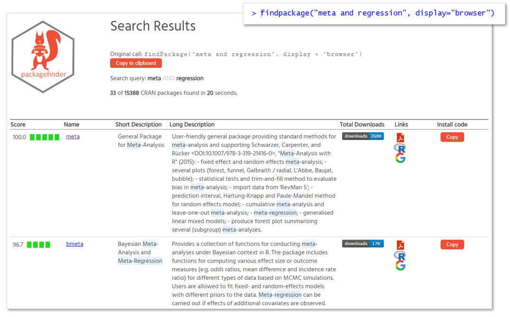
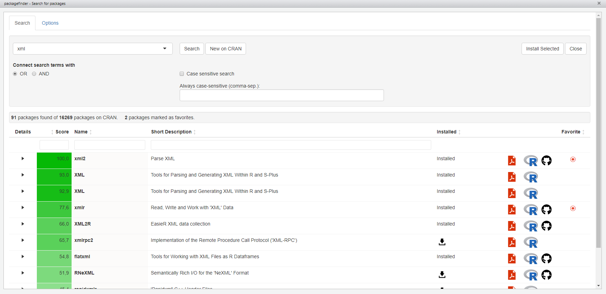
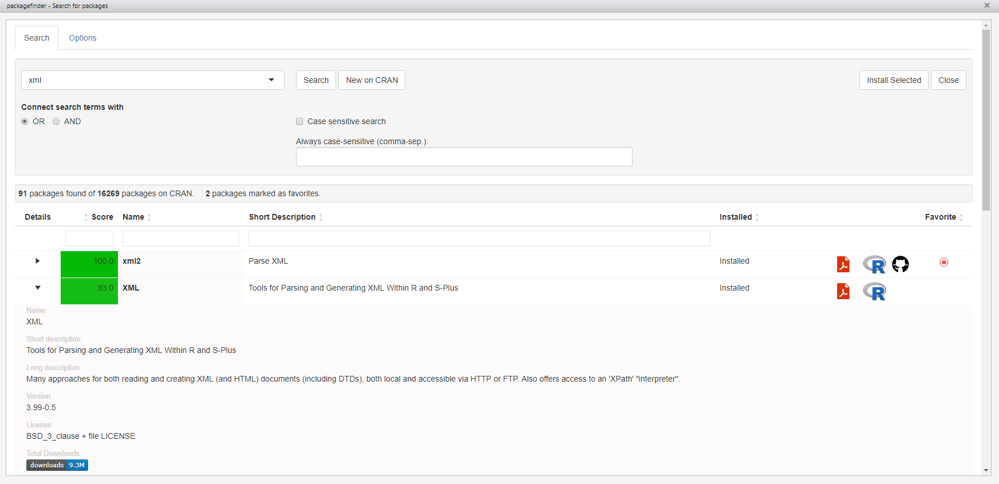

install.packages("packagefinder", dependencies = TRUE).findPackage() function (or its shortcut fp()) to search for packages o CRAN."meta" and "regression" in their name, title or description; then you can query CRAN with findPackage like this: findPackage(c("meta", "regression"), mode = "and").findPackage("meta and regression").display = "console"), the viewer (display = "console", if you are using R Studio), or your web browser (display = "browser"), my favorite. So, fp("meta and regression", display = "browser") is all you need to to search CRAN for all packages relevant for meta regression and show the results as a webpage.findPackage(), packagefinder provides even more features to learn about packages: Use whatsNew() to find out what’s new on CRAN; if you want to learn more on a specific package, query it with packageDetails(), e.g. packageDetails("ggplot2") to find out more.packagefinder comes with an add-in for RStudio that allows you to use the packagefinder functionality through a graphical interface.Currently, there are more than 16,000 R package contributions on CRAN providing R with an unparalleled wealth of features. The downside of the large and increasing amount of packages is that it becomes increasingly difficult to find the right tools to tackle a specific problem. Unfortunately, CRAN itself does not provide any good search functionality.
packagefinder is designed to search for CRAN packages right from the R console. The philosophy behind this package is that R users like using the R console and need a tool to do their day-to-day-work on CRAN without leaving their normal workspace, the console. In fact, the idea is that with packagefinder you do not need to leave the R console to work with CRAN effectively.
packagefinder is developed to save you time and energy finding the right packages to work with, thereby making your work with R more productive.
packagefinder works with a CRAN search index. Most packagefinder functions have an optional index argument that allows you to provide a search index.
If you do not want to provide you own index, you can let packagefinder build a search index for you on-the-fly. This procedure is quick and does the trick, so you do not really have to care for the search index at all.
This search index, however, will not include download figures. If you want download figures to be included in the search results, you need to build a search index yourself by calling the buildIndex() function, for example like this:
buildIndex(filename = "myindex.rdata", download.stats = TRUE)buildIndex() not only returns the search index so that you can immediately work with it but it also able to save the index to a file, depending on the optional filename argument.
Please note that building a search index with download stats included can take some time (an hour or so) because download figures are requested for each of the several thousand R packages individually. A progress bar informs you about the current state of things while your index is being built.
findPackage()
It is easy to search for packages on CRAN with findPackage(). Its main arguments are a vector of keywords you are looking for, keywords, and the search mode, mode. The mode determines if your keywords will be linked together with AND or OR (default is "OR").
So, a simple search for all packages covering meta regression topics, for example, may look like this:
findPackage(c("meta", "regression"), "and")Alternatively you can also simply execute:
findPackage("meta and regression")or
findPackage("meta AND regression")in the console (the logical operators are not case-sensitive). If you write a query like this, the keywords argument is ignored. Currently, the first logical operator is used for all ‘sub-queries’, so
findPackage(c("meta AND regression", "model OR heterogeneity"))in fact searches for meta AND regression AND model and heterogeneity. This behavior may change in future versions of packagefinder.
With the case.sensitive argument (default: FALSE) you can change your search from case insensitive (i.e., ignoring capitalization) to case sensitive.
If you are working with case insensitive search you may still want some terms, especially abbreviations, to be considered case sensitive; for example, “SEM” (structural equation model) is part of many other words, too, like seminar, semantics, semi. To really find only SEM-related packages, you need to make sure this term is considered a case-insensitive search term even if all other search terms are not (i.e., case.sensitive=FALSE). To accomplish this, you can pass a vector of terms that are always considered case sensitive to findPackage using the always.sensitive argument.
Using the weights argument, you can change the weights put on matches of your search terms in the package name, short description and long description of the package. These three are the fields that findPackage() searches your keywords in (if you want to have other fields looked into, as well, you should consider using the exploreFields() function). The fourth element of the weighting schemes is a factor applied to the search score if all terms are indeed found; this fourth element is therefore only interesting when you work in OR mode. The default weighting scheme is c(1,2,1,2), that means matches in the short description receive double weight compared to matches in the package name or long description, and the search score is doubled if all terms are found in OR mode.
The display argument lets you decide how you want your search results be displayed. You can choose to view them in the console, in the viewer (if you are using R Studio) or as a special results page in the web browser. The default value is viewer. Anyway, give browser a try and see if you like it. One of the advantages of the browser version of the results is that you find direct links to the package documentation and can copy the R code to install a package easily. Also, the download figures of the packages are presented on the results page per default.

There are two more arguments influencing the display of the results: With limit.results you can determine the number of results being displayed (default value is 15); if you want to have all matches be displayed, use a negative value for limit.results. With results.longdesc (default value is FALSE) you can decide to include the packages’ long descriptions in the search results; given display space limitations, this may make the whole search results a bit less readable.
If you choose browser as the option for the display argument to view the results in your web browser, the long descriptions are always included in the search results and all matching packages are presented, not just limit.results packages.
exploreFields()
While findPackage only looks into the packages’ names, short and long descriptions, the experimental function exploreFields allows you to search in all important fields including, authors, imports, depends, enhances, license and many more.
To accomplish this, exploreFields() takes not only a search term (only one at this time, no length>1 vector!) but also a vector of fields in which to look for the search term (fields). The default is fields=c("Name", "Description", "LongDescription") representing the package name, short and long descriptions, the fields also employed by findPackage().
The mode argument (AND, OR) works differently than with findPackage(). Since there is only one search term here, the AND and OR are related to the fields you are looking into. So, if mode="AND" then the search term must be found in all fields specified in the fields argument.
Finally, the match argument determines if a match must be "exact" (field content matches search term exactly) or if a match only needs to include the search term ("like").
Search with exploreFields is always case-sensitive.
To find packages where Hadley Wickham was somehow involved we could search like this:
exploreFields("Hadley", c("Maintainer", "Authors@R", "Author"), "or", "like")or simply, since "or" and "like" are the default values for arguments mode and match:
exploreFields("Hadley", c("Maintainer", "Authors@R", "Author"))lastResults()
With the lastResults() function you can easily display the results of your last search with findPackage(). Please note that lastResults() does not work with exploreFields() at this time.
whatsNew()
If you want to check out what is new on CRAN, use the whatsNew() function. By default it shows you new packages that have become available on CRAN today. If you want to go back in time use the last.days argument (with the default value 0 representing “today”).
If you want only a short summary of the packages, set the optional brief argument to TRUE.
packageDetails()
If you want to see detailed information for a specific package, use the packageDetails() function. It shows for a single package that you specify either by its name, or by its GO number from the findPackage() results list, a set of either basic (argument brief=TRUE) or more extensive overview information (brief=FALSE, the default).
To find out more about ggplot2, for example, you would call packageDetails() like this:
packageDetails("ggplot2")Apart from packageDetails(), you can also use the go() function to
go("ggplot2", "install")
go("ggplot2", "manual")
go("ggplot2", "website")
packageDetails("ggplot2")).Here again, instead of the package name you can use the GO number from the findPackage() results list.
If you want to use a graphical interface to packagefinder then the packagefinder add-in for the RStudio IDE is for you. Try it out!
Here are some impressions:

All results can be expanded to show more details:

A new cheat sheet for packagefinder is now available. Download it from http://www.zuckarelli.de/packagefinder/packagefinder_cheatsheet.pdf